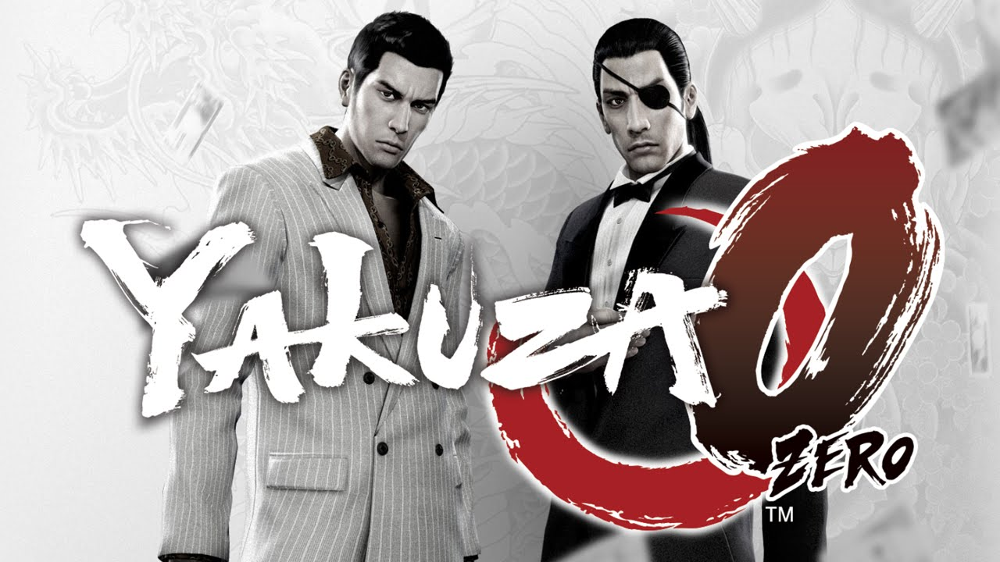

INESQUECÍVEL E INIGUALÁVEL
Yakuza 0 é o que há de melhor na franquia
Resumo:
Yakuza 0 é um jogo de ação e aventura ambientado no Japão dos anos 80. A história se passa em dois bairros fictícios, Kamurocho e Sotenbori, e é dividida entre dois protagonistas: Kazuma Kiryu e Goro Majima, antes de se tornarem as figuras lendárias da série Yakuza.
História
Kazuma Kiryu, um jovem membro da família Dojima, é acusado injustamente de um assassinato após uma cobrança de dívidas dar errado. Este incidente coloca Kiryu em rota de colisão com sua própria organização, enquanto ele busca limpar seu nome e descobrir a verdade por trás da conspiração. O foco de sua história gira em torno de um pedaço de terra chamado "Empty Lot", que é crucial para um esquema imobiliário que ameaça o equilíbrio de poder entre as famílias da yakuza. Enquanto isso, Goro Majima, que é exilado da yakuza por desobedecer ordens, vive sob vigilância em Sotenbori, operando um clube noturno para ganhar dinheiro suficiente para se redimir. Ele recebe uma missão para assassinar uma mulher chamada Makoto Makimura, mas ao conhecê-la e entender sua situação vulnerável, Majima escolhe protegê-la, colocando sua própria vida em risco. Sua jornada explora os temas de redenção, lealdade e honra em meio a um cenário perigoso.
Ao longo do jogo, Kiryu e Majima enfrentam diversos desafios e confrontam os códigos e valores da yakuza. Embora seus caminhos não se cruzem diretamente, suas histórias estão interligadas pela complexa rede de traições, alianças e revelações que moldam o submundo criminoso. Yakuza 0 é uma história emocionante de sacrifício, crescimento pessoal e luta contra adversidades. Ele combina momentos intensos de drama com humor, além de oferecer uma visão única da cultura japonesa dos anos 80, repleta de atividades e minijogos que refletem a época. Espero que este resumo capture a essência do jogo! Se você quiser, podemos discutir mais sobre os personagens ou momentos memoráveis.Review e Nota
Yakuza 0 é um jogo que combina narrativa excepcional, gameplay diversificado e uma ambientação riquíssima, oferecendo uma experiência que se destaca como uma das melhores do gênero. Desde o momento em que você inicia sua jornada pelas ruas vibrantes de Kamurocho e Sotenbori, é impossível não se sentir imerso na atmosfera dos anos 80 do Japão.
O enredo é um dos pontos altos, conduzindo os jogadores por uma história intensa de crime, honra, sacrifício e humanidade. O jogo explora a vida de dois protagonistas, Kazuma Kiryu e Goro Majima, ambos em momentos cruciais de suas vidas. Cada personagem é habilmente desenvolvido, e suas histórias são entrelaçadas com emoção e suspense, mantendo o jogador engajado do início ao fim.
O combate é incrivelmente satisfatório, com cada protagonista possuindo três estilos de luta únicos que oferecem variedade e estratégia durante os confrontos. Os movimentos brutais e os especiais são visualmente impressionantes, e os controles são responsivos e fluidos, tornando cada batalha uma explosão de adrenalina.
Além disso, Yakuza 0 oferece uma infinidade de atividades paralelas, que vão desde administrar negócios até participar de competições de dança, dardos ou até mesmo karaokê – tudo repleto de charme e humor. Essas missões secundárias muitas vezes revelam o lado mais leve e excêntrico dos personagens e do mundo do jogo, equilibrando perfeitamente o drama da narrativa principal.
Os gráficos capturam meticulosamente os detalhes das cidades fictícias, enquanto a trilha sonora é contagiante e amplifica a intensidade e a emoção em cada momento do jogo. A recriação do Japão dos anos 80 é tão autêntica que cada detalhe – das lojas ao comportamento dos NPCs – transpira nostalgia e cuidado.
Outro destaque é a quantidade impressionante de conteúdo. É um jogo que recompensa a exploração, mergulhando o jogador em uma variedade de histórias e atividades que podem facilmente ultrapassar dezenas de horas sem perder o interesse. Cada esquina do mapa esconde algo novo para descobrir, tornando a experiência sempre fresca e emocionante.
Por fim, o equilíbrio entre o drama sério e o humor absurdo é algo que poucos jogos conseguem fazer tão bem quanto Yakuza 0. É uma montanha-russa emocional que faz rir, chorar e refletir. O jogo é uma obra-prima que combina o melhor do storytelling com uma jogabilidade rica e inovadora.
Nota: 100/100
Pontos Positivos
- 8 estilos de combate (4) para cada protagonista
- Mapas marcantes e memoráveis
- Personagens carismáticos e inesquecíveis
Pontos negativos
- Falta de localização
pt-br oficial - Grind ruim no endgame
- Yameda